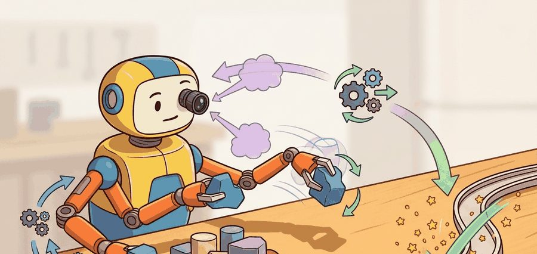
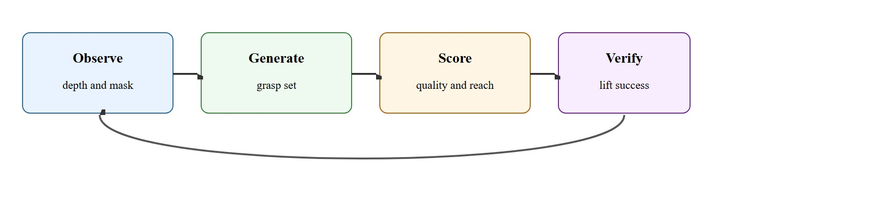
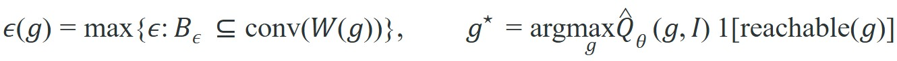

"A grasp is a hypothesis about future contact stability."
A Reliable Bin-Picking Team

This section assumes familiarity with rigid-body contact geometry and wrench spaces from section 6.3, and with depth-image and point-cloud representations from section 28.2. The grasp scoring ideas introduced here are extended in section 43.2 (multi-finger and dexterous hands) and revisited in section 44.1, where tactile signals replace or augment depth-based grasp quality estimates.
A warehouse robot sees a crumpled snack bag it has never encountered before and has roughly 400 milliseconds to commit to a grip before the conveyor moves on. No hand-coded rule covers every novel shape, yet a bad grasp drops the object mid-transfer. The Dex-Net lineage solved this by asking a deeper question: rather than memorizing successful poses, can a robot learn to score the physical robustness of any candidate contact set, across millions of simulated objects, and then transfer that judgment to the real world? You will trace how force-closure geometry gives analytic grasp quality a precise meaning, how GQ-CNN (Grasp Quality Convolutional Neural Network) turns that meaning into a fast learned predictor from depth images, and why that shift from pose lookup to robustness scoring is what finally made robot grasping reliable on unseen objects.
A common misconception is that Dex-Net and GQ-CNN memorize successful grasp poses for known object types and therefore fail on novel shapes. This is incorrect. The network scores the physical robustness of contact geometry. Robustness depends on friction cone overlap and wrench closure, not on object identity. A model trained on millions of simulated shapes generalizes to new objects whose contacts satisfy the same geometric criteria. GQ-CNN is a robustness classifier over depth-image crops, not a pose-retrieval system. That distinction is why it transfers to warehouse objects never seen during training.
Pinch a wet bar of soap between two fingers on exactly opposite faces and it holds. Press it with a single fingertip and it rockets across the room. That difference between a stable pinch and a slippery escape is the entire subject of grasp synthesis. This section shows how antipodal and force-closure reasoning turn it into geometry a robot can compute, then how the Dex-Net and GQ-CNN lineage scales that geometry into learned grasp scoring from depth images or point clouds. Figure 43.1A previews the overall flow: perception becomes candidate contacts, which are filtered through robustness and embodiment feasibility before execution.
Antipodal grasps matter in embodied AI because a robot operating in the real world cannot rely on custom fixtures or controlled surfaces. Two contact points are antipodal when their inward normals are collinear and oppose each other through the object, which means friction alone can generate the forces needed to resist gravity and transport disturbances. On a physical robot, this translates directly to gripper reliability: non-antipodal contacts require high normal force to compensate for misaligned friction cones, accelerating actuator wear and increasing drop probability on smooth or wet surfaces.
The mechanism works through friction cone geometry. Each contact point admits a cone of feasible force directions, and the coefficient of friction sets its half-angle. Two contacts form an antipodal pair when each contact's friction cone contains the line connecting the two points in the direction toward the other contact. A sufficient squeeze force then makes the resultant wrench resist arbitrary small perturbations, satisfying force closure without additional finger contacts or external support. Think of it like gripping a wet soap bar: pressing down on it with one finger sends it shooting forward, but pinching it between two fingers from exactly opposite sides lets friction hold it in place even when your hands are slippery, because each finger's friction cone already points toward the other contact.
So far: a stable grasp needs antipodal contacts (normals collinear and opposing), each contact's friction cone wide enough to cover the direction toward the other contact, and the resulting squeeze force satisfying force closure, all before any learning enters the picture.
That soap-bar intuition, formalized as friction-cone geometry, is exactly what the data-driven era inherits. The antipodal condition links contact mechanics to modern data-driven grasping, and the bridge matters because learned grasp scores are only meaningful if the contact quality concept underneath them stays legible. Figure 43.1.1 lays out the loop these ideas live in: observe, generate a grasp set, score for quality and reach, then verify lift success and feed the outcome back into the next observation.
A grasp score is useful when it predicts whether the object will survive lift, transport, and small disturbances, not when it merely favors visually centered contact patches.

Analytic grasping starts from contact geometry and wrench closure. (A wrench is just the combination of a force and a torque acting on the object; wrench closure means the contacts can generate wrenches in every direction needed to resist disturbance.) Learned grasping often starts from images or point clouds and predicts a proxy for that robustness. The methods differ, but the latent question is the same: does this contact set resist expected disturbances? A grasp score that cannot answer that question in physical terms is a confidence number, not a stability guarantee.
Dex-Net made this bridge concrete by generating massive synthetic grasp datasets labeled with analytic robustness metrics (epsilon quality, defined just below, is the main one), then training networks such as GQ-CNN to predict grasp quality efficiently at runtime. Epsilon quality is a single number: the radius of the largest ball of resistible disturbance wrenches (forces and torques) centered at the origin of wrench space, so a bigger epsilon means the grasp tolerates a bigger push or twist from any direction before it fails. This is called the dataset-as-physics-substitute shift: Dex-Net 2.0 trained on roughly 6.7 million simulated grasps; a human operator physically testing grasps at one per minute would need about 13 years to collect the same labels.

The indicator term reachable(g) is a placeholder for a robot-specific feasibility check, whether the arm can physically move to that contact pose without collision, that this section covers in the Mechanism and Algorithm blocks below and that the Practical Example ties to MoveIt 2 filtering; the score $\hat Q_\theta$ only matters once that check passes.
Think of wrench closure like pitching a tent in open country. A tent standing on poles alone collapses the moment wind arrives from any direction. You add guy ropes pulling outward in several directions so that, no matter which way the wind blows, at least one rope is already loaded and resists the force. Wrench closure is the same idea applied to contact forces: the grasp is valid only when the set of forces the contacts can generate collectively "surrounds" zero in every direction, so that any small push or twist the object receives is already countered by some combination of contact forces already in play.
The stack estimates object geometry from depth or point clouds, samples candidate grasps, scores them with an analytic metric or learned predictor, filters them through robot constraints, and verifies success with lift and disturbance tests.
Candidate generation, the step the title's "synthesis" actually names, typically works by sampling antipodal point pairs directly from the depth image or point cloud: pick a surface point, look for a second surface point whose normal falls within the friction cone of the first (the antipodal test from earlier in this section), and keep the pair as a parallel-jaw candidate if the gripper can span the distance between them. Dex-Net generates millions of such candidates in simulation across sampled object poses and friction coefficients; GQ-CNN at runtime samples a few hundred to a few thousand candidates per depth crop the same way, then hands them to the scoring step below.
# Rank parallel-jaw grasps by learned score and reachability.
grasps = [
{"id": "g1", "gqcnn": 0.88, "reachable": True},
{"id": "g2", "gqcnn": 0.94, "reachable": False},
{"id": "g3", "gqcnn": 0.81, "reachable": True},
]
ranked = []
for g in grasps:
robust = round(g["gqcnn"] * float(g["reachable"]), 2)
ranked.append((g["id"], robust))
ranked.sort(key=lambda row: row[1], reverse=True)
print(ranked)Trace the ranking loop with three candidate grasps on a single depth crop. Start with raw GQ-CNN scores and reachability flags: g1 scores 0.88 and is reachable, g2 scores 0.94 but is unreachable, g3 scores 0.81 and is reachable. Step 1, multiply each score by its reachability indicator (1 for reachable, 0 for not): g1 gives 0.88 x 1 = 0.88, g2 gives 0.94 x 0 = 0.00, g3 gives 0.81 x 1 = 0.81. Step 2, sort descending by the gated score: [0.88, 0.81, 0.00]. Step 3, the planner picks g1. Notice that g2, the highest raw score at 0.94, drops to the bottom: a strong image-space confidence collapses to zero the moment embodiment feasibility fails, which is exactly the discipline a real grasp planner needs.
Expected output: The expected ranking demotes the unreachable high-score grasp to the bottom. In real cells, many grasping failures are exactly this mismatch between image-space confidence and robot-space feasibility.
When calling GraspQualityCNN.quality() from the GQ-CNN package, always pass both the depth crop and an explicit BinaryImage segmentation mask as separate arguments. If you pass a raw NumPy array in place of the mask, the package accepts it silently but falls back to a uniform prior, which inflates scores for background-heavy crops and makes nearly every candidate appear high-quality. Construct the mask with BinaryImage(mask_array.astype(np.uint8), frame='camera') before the call, and verify that mask.nonzero_pixels().shape[0] is nonzero; a zero-pixel mask is the most common silent failure when the segmentation upstream produces an all-false output for a novel object.
GQ-CNN's default model was trained on 6.7 million Dex-Net 2.0 depth crops at 32x32 pixels and, in typical CPU benchmarks, runs inference in roughly 8 ms, which fits inside a 400 ms conveyor window when paired with a fast segmentation front-end; exact timing depends on CPU generation and crop batch size. On a Franka Panda with an Intel RealSense depth camera, a full pipeline (segment, sample 1000 candidates, score with GQ-CNN, filter through MoveIt 2 reachability) typically completes in roughly 200-250 ms in reported setups, leaving margin for motion planning. The model degrades measurably on objects thinner than about 15 mm or with specular surfaces covering more than roughly 40% of the visible area, based on the failure patterns reported for the Dex-Net lineage; for those cases, supplementing with a tactile confirmation step (section 44.1) or switching to analytic scoring from a known CAD model typically recovers most of the lost reliability.
A grasp that closes cleanly is not necessarily a stable grasp. Closure without disturbance testing often overestimates quality badly, especially for thin, shiny, or partial-view objects. The mechanism is straightforward: a depth camera returns a near-flat point cloud for a glossy bottle cap, so the generated grasp candidates cluster near the specular highlight rather than the true object centroid. GQ-CNN typically assigns high scores to those candidates because the depth crop looks like a well-centered grasp in training data; the robot closes its fingers, sensor signals confirm contact, but the contact can be off-center by roughly 8-12 mm in practice. The object survives closure and fails during transport, a failure mode that falls outside the training distribution for most grasp scorers because that distribution is built from successful, well-centered simulated contacts.
Amazon Robotics bin-picking cells and Ambidextrous Robotics' AmbiSort (the commercial spin-out of the Dex-Net work from Ken Goldberg's Berkeley AUTOLAB) still run parallel-jaw and suction grasp synthesis rather than multi-finger hands, because in a warehouse sorting tens of thousands of mixed SKUs per hour the dominant failure mode is mis-scored contacts on unseen packaging, not insufficient finger count. The engineering return comes from better robustness scoring (the GQ-CNN successors that report over 95% reliability on novel objects in Goldberg's reported pick rates) and tighter MoveIt-style reachability filtering, not from adding actuated fingers that increase cost, calibration burden, and cycle time.
A perfectly centered grasp on a slippery shampoo bottle can still become an expensive lesson in rigid-body optimism.
Analytic methods (epsilon quality, the Ferrari-Canny metric, which scores a grasp by the radius of the largest wrench-space ball its contact forces can resist in every direction) win when the object geometry is known precisely, friction coefficients are measurable, and the grasp set is small enough to evaluate exhaustively. They are the right tool for structured kitting lines where CAD models exist. Learned methods (GQ-CNN and its successors) win when objects are novel, geometry is partially occluded, and inference must complete in under 50 ms on a live depth stream. The crossover point is roughly: if you have a CAD model and fewer than a few hundred candidate grasps, use analytic; if you have a raw depth image and thousands of candidates, use learned scoring. Hybrid pipelines use analytic labels to supervise the learned scorer offline and learned inference to filter candidates at runtime.
Foundation-model grasp scoring. Large vision-language models are now used as zero-shot grasp evaluators: a language prompt specifies task constraints ("pick by the handle, not the blade") and the model scores candidates without retraining. GraspVLA (2025, from the Shanghai AI Lab / Tsinghua group) shows that a VLA (Vision-Language-Action model) backbone fine-tuned with grasp-specific tokens outperforms GQ-CNN on novel household objects while remaining steerable through natural language instructions, collapsing the previously separate perception and scoring stages into one pass.
Diffusion-based grasp generation. Rather than sampling then scoring, recent work generates grasp distributions directly with denoising diffusion (the same iterative noise-then-denoise generative process used in image diffusion models, here applied to grasp poses) over SE(3) (the space of 3D rotations and translations, i.e. every possible gripper position and orientation). DiffusionGrasp / GraspDiffusion (2024, ETH Zurich Robotics) frames grasp synthesis as iterative denoising of contact-frame poses conditioned on partial point clouds, producing diverse, physically valid candidates in a single forward pass and removing the expensive sample-then-filter loop that limits GQ-CNN throughput.
Task-conditioned and affordance-aware scoring. Grasp quality now incorporates downstream placement and handover constraints, not only lift stability. UniGrasp extended to task contexts (2024-2025, work from CMU and Google DeepMind) shows that scoring a grasp jointly against contact robustness and post-grasp trajectory feasibility reduces regrasping frequency by roughly 30% on assembly benchmarks compared to lift-only objectives.
Open problem. All three directions above still rely on simulation-to-real transfer for contact labels, and the sim-to-real gap for deformable or granular objects (fabrics, food items, powders) remains unsolved. A tractable research direction is building a self-supervised data flywheel: a robot grasps real objects, records tactile and force signals during and after lift, and uses those signals as automatic re-labeling supervision to close the sim-to-real loop without human annotation, specifically for object classes where no reliable CAD model or analytic label exists.
Do you know what disturbance model your grasp score is trying to resist, or is the score just a number with good marketing?
Beyond its role as a scorer, Dex-Net also earns its place as a teaching device. It shows contact mechanics to practitioners arriving from machine learning and dataset scale to those arriving from classical robotics: the bridge runs both ways.
Grasp synthesis never stands alone. A grasp score that ignores reachability, placement, or sensor uncertainty is not wrong in theory, but it is incomplete in a real manipulation system.
| Tool or Library | Role in the Topic | Builder Advice |
|---|---|---|
| Dex-Net | Synthetic grasp dataset generation | Use it to connect analytic robustness labels to scalable supervised training. |
| GQ-CNN | Runtime grasp scoring | Useful for fast grasp ranking from depth imagery. |
| MoveIt 2 | Embodiment feasibility | Use it to filter learned or analytic grasps through reachability and collision checks. |
Evaluate grasp proposals on a small object set using both a simple analytic metric and a learned score. Compare the top candidate after reachability filtering.
When a chosen grasp fails, separate contact quality from perception quality and embodiment feasibility. Those three causes tend to require different fixes and different data.
Beginner (weekend): Grasp scorer comparison in PyBullet. Load three household objects (mug, block, bottle) into PyBullet, sample 200 parallel-jaw grasp candidates per object, and rank them with both a simple antipodal heuristic and a GQ-CNN depth-crop score; the key challenge is converting PyBullet contact normals into the image-space crop format that GQ-CNN expects. Intermediate (1-2 weeks): Reachability-aware grasp pipeline with MoveIt 2 and ROS2. Build a full pipeline that takes a live RealSense depth stream, segments the target object, scores candidates with GQ-CNN, and filters them through MoveIt 2 collision and reachability checks before execution; the key challenge is matching the camera frame, robot base frame, and MoveIt 2 planning frame consistently so that a high-scoring grasp in image space is also physically reachable. Intermediate-plus (2 weeks): Dex-Net dataset re-labeling in Isaac Lab. Re-simulate a 500-object subset of the Dex-Net 2.0 dataset inside Isaac Lab, label each grasp with both the analytic epsilon metric and a binary lift-success outcome from the physics engine, and measure how well epsilon score predicts lift success across object categories; the key challenge is setting stable contact parameters in Isaac Lab so that the physics outcome matches the analytic label rather than reflecting simulation noise.
Canonical project page for synthetic grasp datasets and robust-grasp planning.
Official package documentation for learned grasp scoring in the Dex-Net lineage.
Useful for reachability, collision checking, and execution after grasp ranking.
Grasp synthesis succeeds when contact robustness, embodiment feasibility, and lift verification stay in the same loop.
Define one disturbance model for a grasp benchmark and explain how your scoring method, analytic or learned, is supposed to predict resistance to it.